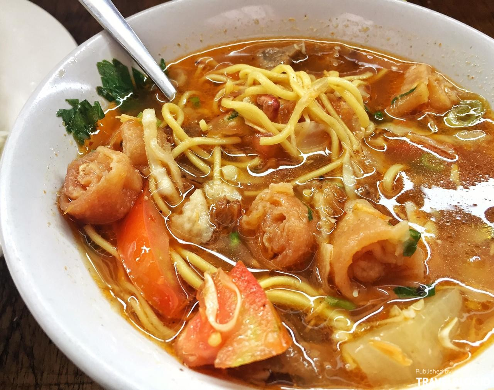
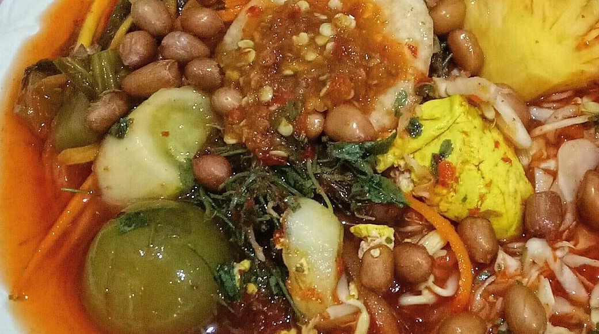

Soto Bogor
Soto bogor merupakan campuran dari daging sapi, kikil, usus, urat, babat, risol, kentang atau lobak rebus, mie kuning, tomat, serta kol, yang dipadu dengan kuah, lalu ditaburi dengan daun bawang dan seledri, serta tambahan kerupuk emping. Berbeda dengan kuah soto pada umumnya yang berkuah bening atau menggunakan santan, kuah soto bogor terlihat berwarna kemerahan yang timbul dari campuran cabai merah dalam bumbunya. Rasanya semakin pedas jika disajikan dengan sambal yang merupakan campuran cabai rawit dan cuka, serta jeruk nipis untuk menambah kesegaran rasanya. Hidangan pedas dan gurih ini cocok untuk disantap sebagai pendamping nasi, baik saat makan siang maupun makan malam.
Toge Goreng

Tauge goreng adalah makanan vegetarian, karena hidangan ini sama sekali tidak mengandung unsur hewani. Bahan utamanya adalah tauge, atau kecambah kacang hijau. Biasanya kecambah kacang hijau ini dimasak langsung di hadapan pembeli segera setelah pemesanan, menggunakan tungku yang sederhana. Secara teknis, tauge ini tidaklah digoreng menggunakan minyak, melainkan ditumis dengan air sedikit, atau lebih tepatnya direbus dengan sedikit air panas. Kemudian irisan tahu, mi kuning, dan irisan ketupat atau lontong ditambahkan, ditumis dengan air dan dipanaskan bersama-sama. Kemudian bahan-bahan yang sudah masak dan dipanaskan ini disirami kuah kental bercitarasa asin-gurih yang terbuat dari oncom.
Asinan Bogor
Sebagai kuliner khas Indonesia yang nggak lekang waktu, asinan Bogor nggak pernah kehilangan peminat. Asinan Bogor mampu menjamah lidah nggak cuma dewasa, tetapi juga remaja. Dibungkus dalam plastik bening, asinan Bogor merupakan kudapan mirip acar yang diproses lewat cara pengawetan. Terdiri dari tiga jenis, asinan buah, sayur dan campuran, asinan Bogor makin lengkap dengan isian tempe/tahu goreng, kerupuk, hingga kacang goreng. Meski diawetkan, asinan Bogor menggunakan bahan-bahan alami. Nggak ada biang gula maupun zat pengawet berbahaya di dalam porsi asinan Bogor. Sehingga, sensasi asam, manis dan pedas lewat kuahnya selalu siap membuat lidah dan tenggorokan kamu segar kembali. Dengan harga yang cukup terjangkau, Rp 20-30 ribu per porsi, asinan Bogor adalah rekomendasi jajanan paling oke nggak cuma buat oleh-oleh, tetapi juga disantap on the spot.